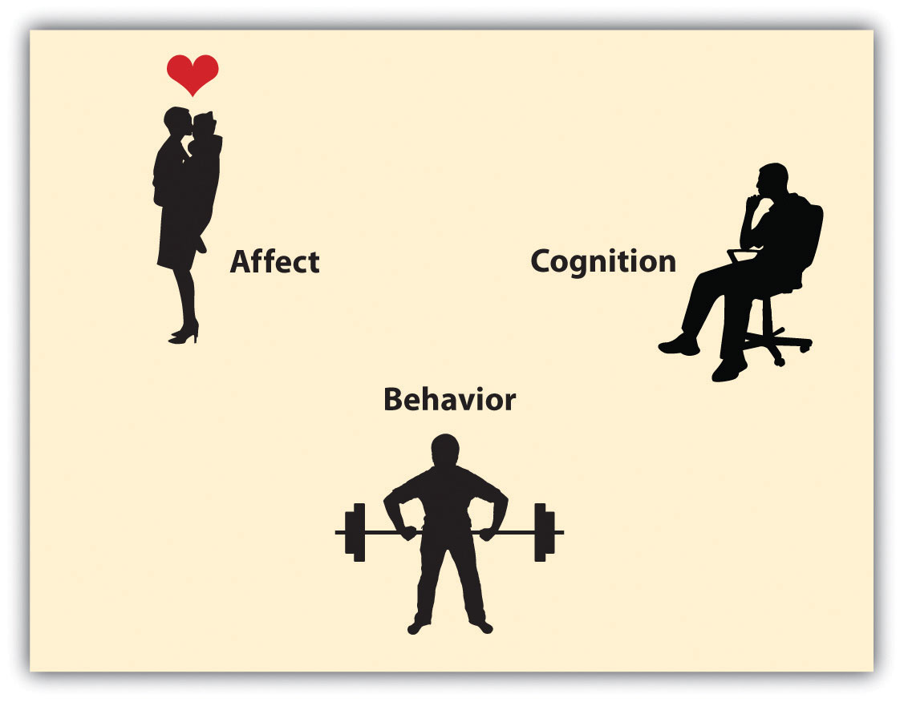

Social psychology is based on the ABCs of affect, behavior, and cognition (Figure 1.2 "The ABCs of Affect, Behavior, and Cognition"). In order to effectively maintain and enhance our own lives through successful interaction with others, we rely on these three basic and interrelated human capacities:
Figure 1.2 The ABCs of Affect, Behavior, and Cognition
Human beings rely on the three capacities of affect, behavior, and cognition, which work together to help them create successful social interactions.
You can see that these three aspects directly reflect the idea in our definition of social psychology—the study of the feelings, behaviors, and thoughts of individuals in the social situation. Although we will frequently discuss each of the capacities separately, keep in mind that all three work together to produce human experience. Now let’s consider separately the roles of cognition, affect, and behavior.
The human brain contains about 100 billion neurons, each of which can make contact with tens of thousands of other neurons. The distinguishing brain feature in mammals, including humans, is the more recently evolved cerebral cortex—the part of the brain that is involved in thinking (Figure 1.3 "The Cerebral Cortex"). Humans are highly intelligent, and they use cognition in every part of their social lives. Psychologists refer to cognition as the mental activity of processing information and using that information in judgment. Social cognitionMental activity that relates to social activities and that helps us meet the goal of understanding and predicting the behavior of ourselves and others. is cognition that relates to social activities and that helps us understand and predict the behavior of ourselves and others.
Over time, people develop a set of social knowledge that contains information about the self, other people, social relationships, and social groups. Two types of knowledge are particularly important in social psychology: schemas and attitudes. A schemaA knowledge representation that includes information about a person or group. is a knowledge representation that includes information about a person or group (e.g., our knowledge that Joe is a friendly guy or that Italians are romantic). An attitudeKnowledge that includes primarily a liking or disliking of a person, thing, or group. is a knowledge representation that includes primarily our liking or disliking of a person, thing, or group (“I really like Julie”; I dislike my new apartment”). Once we have formed them, both schemas and attitudes allow us to judge quickly and without much thought whether someone or something we encounter is good or bad, helpful or hurtful, to be sought out or avoided. Thus schemas and attitudes have an important influence on our social information processing and social behavior.
Social cognition involves the active interpretation of events. As a result, different people may draw different conclusions about the same events. When Odette smiles at Robert, he might think that she is romantically attracted to him, whereas she might think that she’s just being friendly. When Mike tells a joke about Polish people, he might think it’s funny, but Wanda might think he is being prejudiced. The 12 members of a jury who are deliberating about the outcome in a trial have all heard the same evidence, but each juror’s own schemas and attitudes may lead him or her to interpret the evidence differently. The fact that different people interpret the same events differently makes life interesting, but it can sometimes lead to disagreement and conflict. Social psychologists study how people interpret and understand their worlds and, particularly, how they make judgments about the causes of other peoples’ behavior.
AffectThe feelings we experience as part of our everyday lives. refers to the feelings we experience as part of our everyday lives. As our day progresses, we may find ourselves feeling happy or sad, jealous or grateful, proud or embarrassed. Although affect can be harmful if it is unregulated or unchecked, our affective experiences normally help us to function efficiently and in a way that increases our chances of survival. Affect signals us that things are going OK (e.g., because we are in a good mood or are experiencing joy or serenity) or that things are not going so well (we are in a bad mood, anxious, upset, or angry). Affect can also lead us to engage in behaviors that are appropriate to our perceptions of a given situation. When we are happy, we may seek out and socialize with others; when we are angry, we may attack; and when we are fearful, we may run away.
We experience affect in the form of mood and emotions. MoodThe positive or negative feelings that are in the background of our everyday experiences. refers to the positive or negative feelings that are in the background of our everyday experiences. Most of the time, we are in a relatively good mood, and positive mood has some positive consequences—it encourages us to do what needs to be done and to make the most of the situations we are in (Isen, 2003).Isen, A. M. (2003). Positive affect as a source of human strength. In A psychology of human strengths: Fundamental questions and future directions for a positive psychology (pp. 179–195). Washington, DC: American Psychological Association. When we are in a good mood, our thought processes open up, and we are more likely to approach others. We are more friendly and helpful to others when we are in a good mood than when we are in a bad mood, and we may think more creatively (De Dreu, Baas, & Nijstad, 2008).De Dreu, C. K. W., Baas, M., & Nijstad, B. A. (2008). Hedonic tone and activation level in the mood-creativity link: Toward a dual pathway to creativity model. Journal of Personality and Social Psychology, 94(5), 739–756. On the other hand, when we are in a bad mood, we are more likely to prefer to remain by ourselves rather than interact with others, and our creativity suffers.
EmotionsA brief, but often intense, mental and physiological feeling state. are brief, but often intense, mental and physiological feeling states. In comparison with moods, emotions are shorter lived, stronger, and more specific forms of affect. Emotions are caused by specific events (things that make us, for instance, jealous or angry), and they are accompanied by high levels of arousal. Whereas we experience moods in normal, everyday situations, we experience emotions only when things are out of the ordinary or unusual. Emotions serve an adaptive role in helping us guide our social behaviors. Just as we run from a snake because the snake elicits fear, we may try to make amends with other people when we feel guilty.
Because humans interact with and influence each other every day, we have developed the ability to make these interactions proceed efficiently and effectively. We cooperate with other people to gain outcomes that we could not obtain on our own, and we exchange goods, services, and other benefits with other people. These behaviors are essential for survival in any society (Kameda, Takezawa, & Hastie, 2003; Kameda, Takezawa, Tindale, & Smith, 2002).Kameda, T., Takezawa, M., & Hastie, R. (2003). The logic of social sharing: An evolutionary game analysis of adaptive norm development. Personality & Social Psychology Review, 7(1), 2–19.; Kameda, T., Takezawa, M., Tindale, R. S., & Smith, C. M. (2002). Social sharing and risk reduction: Exploring a computational algorithm for the psychology of windfall gains. Evolution & Human Behavior, 23(1), 11–33.
The sharing of goods, services, emotions, and other social outcomes is known as social exchangeThe sharing of goods, services, emotions, and other social outcomes among people.. Social rewards (the positive outcomes that we give and receive when we interact with others) include such benefits as attention, praise, affection, love, and financial support. Social costs (the negative outcomes that we give and receive when we interact with others), on the other hand, include, for instance, the frustrations that accrue when disagreements with others develop, the guilt that results if we perceive that we have acted inappropriately, and the effort involved in developing and maintaining harmonious interpersonal relationships.
Imagine a first-year student at your college or university who is trying to decide whether or not to pledge a fraternity. Joining the fraternity has costs, in terms of the dues that have to be paid, the need to make friends with each of the other fraternity members and to attend fraternity meetings, and so forth. On the other hand, there are the potential benefits of group membership, including having a group of friends with similar interests and a social network to help find activities to participate in. To determine whether or not to pledge, the student has to weigh both the social and the material costs and benefits before coming to a conclusion (Moreland & Levine, 2006).Moreland, R. L., & Levine, J. M. (Eds.). (2006). Socialization in organizations and work groups. New York, NY: Psychology Press.
People generally prefer to maximize their own outcomes by attempting to gain as many social rewards as possible and by attempting to minimize their social costs. Such behavior is consistent with the goal of protecting and enhancing the self. But although people do behave according to the goals of self-concern, these goals are tempered by other-concern: the goals of respecting, accepting, and cooperating with others. As a result, social exchange is generally fair and equitable, at least in the long run. Imagine, for example, that I ask you to do a favor for me, and you do it. If I were only concerned about my own self-enhancement, I might simply accept the favor without any thought of paying you back. Yet both you and I would realize that you would most certainly expect me to be willing to do the same type of favor for you, should you ask me at some later time.
One of the outcomes of living together in small groups over thousands of years is that humans have learned to cooperate by giving benefits to those who are in need, with the expectation of a return of benefits at a future time. This mutual, and generally equitable, exchange of benefits is known as reciprocal altruismThe mutual, and generally equitable, exchange of benefits between people.. An individual who is temporarily sick or injured will benefit from the help that he or she might get from others during this time. And according to the principle of reciprocal altruism, other group members will be willing to give that help to the needy individual because they expect that similar help will be given to them should they need it. However, in order for reciprocal altruism to work, people have to keep track of how benefits are exchanged, to be sure that everyone plays by the rules. If one person starts to take benefits without paying them back, this violates the principle of reciprocity and should not be allowed to continue for very long. In fact, research has shown that people seem to be particularly good at detecting “cheaters”—those who do not live up to their obligations in reciprocal altruism—and that these individuals are judged extremely negatively (Mealey, Daood, & Krage, 1996; Tooby & Cosmides, 1992).Mealey, L., Daood, C., & Krage, M. (1996). Enhanced memory for faces of cheaters. Ethology & Sociobiology, 7(2), 119–128; Tooby, J., & Cosmides, L. (1992). The psychological foundations of culture. In J. H. Barkow & L. Cosmides (Eds.), The adapted mind: Evolutionary psychology and the generation of culture (p. 666). New York, NY: Oxford University Press.